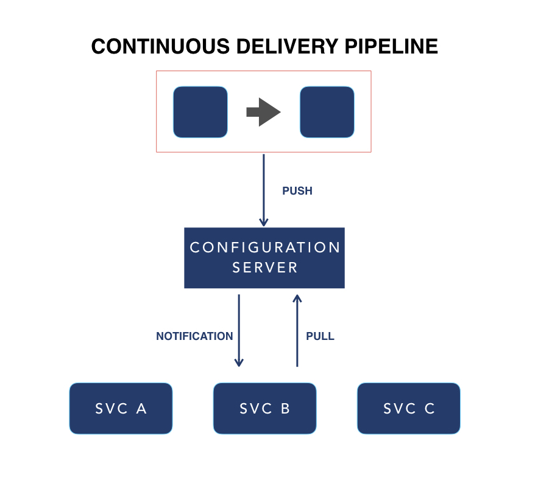

This is the fifth post in the series - Continuous Delivery of Microservices. In the previous post, we talked about environment strategy - including artifact promotion and ways to leverage modern infrastructure for dynamic environments. In this post, we will discuss configuration strategy.
Introduction
An application’s configuration is everything that is variable across deployment environments such as development, test, and production. Deploying the same code but switching out certain aspects (like URLs to backing services, database connection information, credentials to third-party services, etc.) are examples of what I mean by variables in this context. Such configuration should be stored separately from the application code.
In a system based on a microservices architecture, configuration also needs to be distributed across multiple services. There are a couple of ways to manage configurations in a distributed way: *make configuration available in environment variables at deploy time, *use an external configuration server product designed to expose configuration
Here are three things you should consider for your microservices configuration strategy:
1: Manage application configurations centrally
An external configuration server is a more appropriate system for managing application configuration and introduces cleaner separation of concerns.
The configuration management code (in chef or puppet) can solely be responsible for cluster management. With Chef, updating application configuration would require a slow convergence operation of the cluster. With an external configuration server, updates to application configuration can be more dynamic without the need to update any other aspect of the infrastructure.
Another added advantage of this approach is that it forces consistent practices with organizing configuration by application, and environment.
There are a number of purpose built external configuration servers you could consider. The Spring cloud config server is a good option for Spring applications. With support for multiple backends, you could integrate with industry standard KV stores such as Consul for non-sensitive configuration, and Vault for sensitive configuration.
2: Standard process for distributing configuration
For microservices systems, it is possible to have different tech stacks across the systems. If one is handling configuration differently for different stacks, then the complexity becomes hard to manage. Therefore, regardless of the tech stack of a microservice, configurations should be distributed to nodes in a standard manner.
A technique we use is to supply configuration as environment variables per The Twelve-Factor App methodology. As a rule of thumb, always avoid distributing configuration files.
The Twelve-Factor app is a manifesto that provides some guidelines to be followed while building cloud-native applications. These guidelines let you build applications that are cloud-friendly. To truly harness the advantages of a cloud environment, an application needs to embrace cloud concepts such as elastic scalability, independently deployable and operable services, and statelessness.
3: Governance policy around secrets
Secrets such as API keys, passwords, and certificates need to be accessed securely. You need a governance process to ensure secrets access is managed appropriately. One technique we recommend to store all secrets is a central secrets store. The central external configuration server could provide this capability.
This central store gives you traceability on how and when policies were changed. That traceability goes a long way in setting up a governance process.
A tool we recommend to store secrets is the Vault by Hashicorp.
Example:

This is an example of an architecture where configurations are stored centrally in a config server and updated by the CD pipeline and pushed out to service instances.
At the top there is an abstraction of the CD pipeline. This updates the config server and then the configuration from the config server is pushed to the service instances. At run time, service instances are aware of how to consume this configuration. When setting-up an architecture like this, you need to consider how many configuration servers should you have. We recommend that you have one configuration server per CD environment, or at least one for production and one for all other environments.
Summary
This is the part 5 of our CD for Microservices blog series. We have talked about configuration strategy for your CD pipeline. In the next post, we will talk about the last consideration: remediation strategies for when something goes wrong.